using PhaseUtils
using CairoMakie
CairoMakie.activate!(; type="png")Windowing Functions
Windowing functions are essential tools in signal processing and image analysis for reducing edge effects, localizing analysis, and controlling spectral leakage. PhaseUtils provides three window types:
GaussianWindow— smooth Gaussian taper with configurable width and centre positionHannWindow— raised-cosine taper that reaches exactly 0 at both edgesTukeyWindow— flat-top taper with controllable ramp fractionalpha
All windows are N-dimensional functors: construct a window object, then call it with a size tuple.
Basic Gaussian Windows
Let's start with creating simple centered Gaussian windows of different widths:
Create windows with different widths
gw_narrow = GaussianWindow(8)
gw_medium = GaussianWindow(15)
gw_wide = GaussianWindow(25)GaussianWindow{Int64, Nothing}(25, nothing)Generate 1D windows for visualization
dims_1d = (65,)
window_narrow = gw_narrow(dims_1d)
window_medium = gw_medium(dims_1d)
window_wide = gw_wide(dims_1d)65-element Vector{Float64}:
0.4407841408053245
0.4635690174959985
0.4867522559599717
0.5102777977955038
0.534085147759517
0.5581095554166826
0.5822822402018133
0.6065306597126334
0.6307788205474283
0.6549476304858832
⋮
0.6307788205474283
0.6065306597126334
0.5822822402018133
0.5581095554166826
0.534085147759517
0.5102777977955038
0.4867522559599717
0.4635690174959985
0.4407841408053245In GaussianWindow, the width parameter is a scaling factor: the 1/√e points fall at exactly ±width pixels from the centre of the array.
Plot 1D windows
fig = Figure(; size=(800, 400))
ax = Axis(
fig[1, 1];
title="1D Gaussian Windows with Different Widths",
xlabel="Pixel Index",
ylabel="Window Value",
)
lines!(ax, -32:32, window_narrow; label="Width = 8", linewidth=2)
lines!(ax, -32:32, window_medium; label="Width = 15", linewidth=2)
lines!(ax, -32:32, window_wide; label="Width = 25", linewidth=2)Makie.Lines{Tuple{Vector{GeometryBasics.Point{2, Float64}}}}Reference lines at 1/√e mark the ±width pixel offsets for each window
hlines!(ax, [1 / √ℯ]; color=:red, linestyle=:dot, linewidth=2, alpha=0.8)
vlines!(ax, [-8, 8]; color=:blue, linestyle=:dash, alpha=0.7)
vlines!(ax, [-15, 15]; color=:orange, linestyle=:dash, alpha=0.7)
vlines!(ax, [-25, 25]; color=:green, linestyle=:dash, alpha=0.7)
ax.yticks = ([1 / √ℯ], ["1/√e"])
ax.xticks = ([-25, -15, -8, 8, 15, 25], ["-25", "-15", "-8", "8", "15", "25"])
axislegend(ax; position=:rt)
fig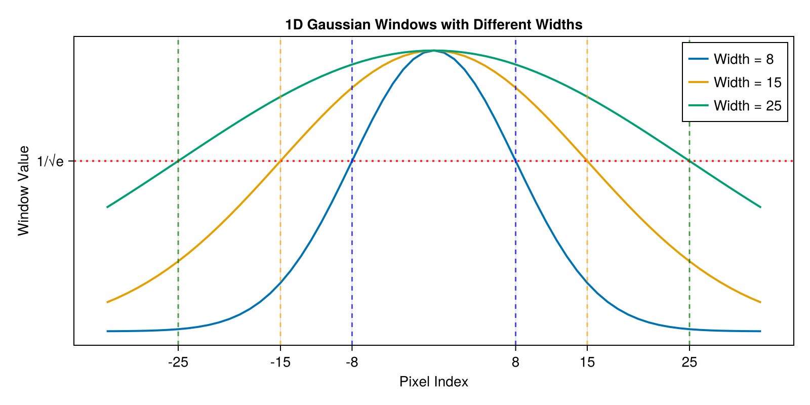
2D Gaussian Windows
Gaussian windows are particularly useful in 2D for image processing applications:
Create 2D windows with symmetric widths
dims_2d = (64, 64)
window_2d_narrow = gw_narrow(dims_2d)
window_2d_medium = gw_medium(dims_2d)
window_2d_wide = gw_wide(dims_2d)64×64 Matrix{Float64}:
0.204416 0.21481 0.225373 0.236076 … 0.225373 0.21481 0.204416
0.21481 0.225734 0.236833 0.248081 0.236833 0.225734 0.21481
0.225373 0.236833 0.248478 0.260279 0.248478 0.236833 0.225373
0.236076 0.248081 0.260279 0.272641 0.260279 0.248081 0.236076
0.246893 0.259448 0.272205 0.285133 0.272205 0.259448 0.246893
0.257793 0.270901 0.284222 0.297721 … 0.284222 0.270901 0.257793
0.268743 0.282409 0.296295 0.310367 0.296295 0.282409 0.268743
0.279711 0.293934 0.308387 0.323033 0.308387 0.293934 0.279711
0.29066 0.305441 0.320459 0.335679 0.320459 0.305441 0.29066
0.301556 0.31689 0.332472 0.348262 0.332472 0.31689 0.301556
⋮ ⋱
0.29066 0.305441 0.320459 0.335679 … 0.320459 0.305441 0.29066
0.279711 0.293934 0.308387 0.323033 0.308387 0.293934 0.279711
0.268743 0.282409 0.296295 0.310367 0.296295 0.282409 0.268743
0.257793 0.270901 0.284222 0.297721 0.284222 0.270901 0.257793
0.246893 0.259448 0.272205 0.285133 0.272205 0.259448 0.246893
0.236076 0.248081 0.260279 0.272641 … 0.260279 0.248081 0.236076
0.225373 0.236833 0.248478 0.260279 0.248478 0.236833 0.225373
0.21481 0.225734 0.236833 0.248081 0.236833 0.225734 0.21481
0.204416 0.21481 0.225373 0.236076 0.225373 0.21481 0.204416Visualize 2D windows
fig = Figure(; size=(1000, 300))
ax1 = Axis(fig[1, 1]; title="Narrow (σ=8)", aspect=DataAspect())
heatmap!(ax1, window_2d_narrow; colormap=:viridis)
ax2 = Axis(fig[1, 2]; title="Medium (σ=15)", aspect=DataAspect())
heatmap!(ax2, window_2d_medium; colormap=:viridis)
ax3 = Axis(fig[1, 3]; title="Wide (σ=25)", aspect=DataAspect())
hm = heatmap!(ax3, window_2d_wide; colormap=:viridis)
Colorbar(fig[1, 4], hm; label="Window Value")
fig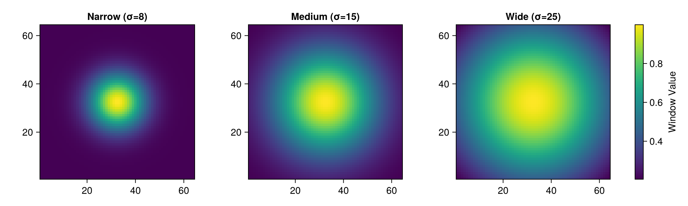
Asymmetric Windows
You can create asymmetric windows by specifying different widths for each dimension:
Create asymmetric windows
gw_horizontal = GaussianWindow((30, 10)) # Wide horizontally, narrow vertically
gw_vertical = GaussianWindow((10, 30)) # Narrow horizontally, wide vertically
window_horizontal = gw_horizontal(dims_2d)
window_vertical = gw_vertical(dims_2d)
fig = Figure(; size=(800, 400))
ax1 = Axis(fig[1, 1]; title="Horizontal Gaussian (30×10)", aspect=DataAspect())
heatmap!(ax1, window_horizontal; colormap=:plasma)
ax2 = Axis(fig[1, 2]; title="Vertical Gaussian (10×30)", aspect=DataAspect())
hm = heatmap!(ax2, window_vertical; colormap=:plasma)
Colorbar(fig[1, 3], hm; label="Window Value")
fig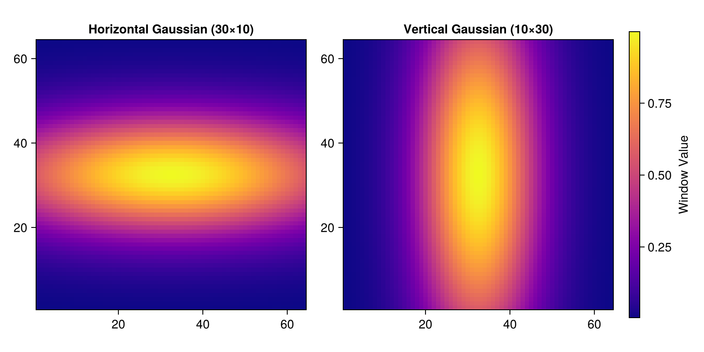
Off-Center Windows
One of the key features of PhaseUtils' GaussianWindow is the ability to specify custom center positions:
Create off-center windows
gw_topleft = GaussianWindow(12; center=(16, 16)) # Top-left quadrant
gw_topright = GaussianWindow(12; center=(16, 48)) # Top-right quadrant
gw_bottomleft = GaussianWindow(12; center=(48, 16)) # Bottom-left quadrant
gw_bottomright = GaussianWindow(12; center=(48, 48)) # Bottom-right quadrant
window_tl = gw_topleft(dims_2d)
window_tr = gw_topright(dims_2d)
window_bl = gw_bottomleft(dims_2d)
window_br = gw_bottomright(dims_2d)
fig = Figure(; size=(800, 800))
ax1 = Axis(fig[1, 1]; title="Top-Left (16,16)", aspect=DataAspect())
heatmap!(ax1, window_tl; colormap=:inferno)
ax2 = Axis(fig[1, 2]; title="Top-Right (16,48)", aspect=DataAspect())
heatmap!(ax2, window_tr; colormap=:inferno)
ax3 = Axis(fig[2, 1]; title="Bottom-Left (48,16)", aspect=DataAspect())
heatmap!(ax3, window_bl; colormap=:inferno)
ax4 = Axis(fig[2, 2]; title="Bottom-Right (48,48)", aspect=DataAspect())
hm = heatmap!(ax4, window_br; colormap=:inferno)
Colorbar(fig[:, 3], hm; label="Window Value")
fig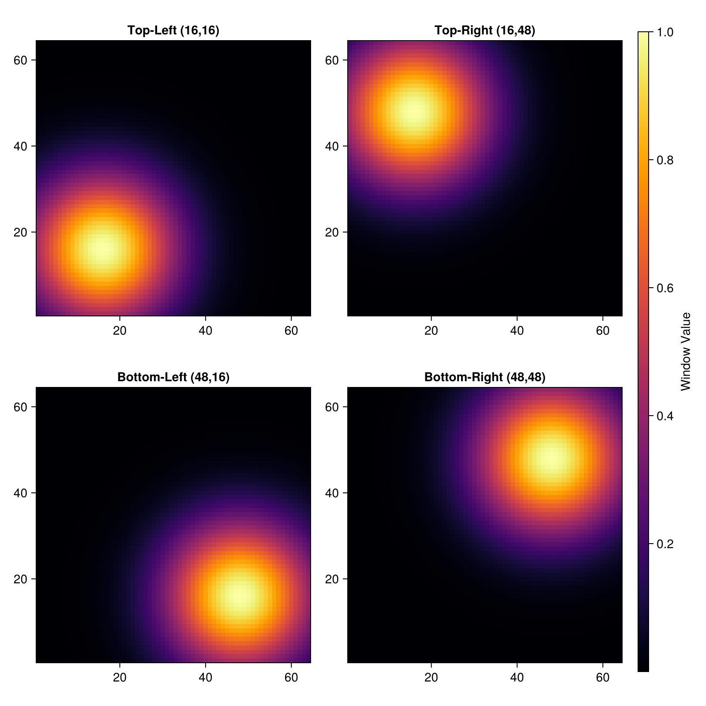
Asymmetric Off-Center Windows
For maximum flexibility, you can combine asymmetric widths with custom center positions:
Create asymmetric off-center windows
gw_asym_center = GaussianWindow((20, 10); center=(32, 32)) # Centered asymmetric
gw_asym_offset = GaussianWindow((15, 25); center=(20, 45)) # Off-center asymmetric
window_asym_center = gw_asym_center(dims_2d)
window_asym_offset = gw_asym_offset(dims_2d)
fig = Figure(; size=(800, 400))
ax1 = Axis(fig[1, 1]; title="Asymmetric Centered (20×10)", aspect=DataAspect())
heatmap!(ax1, window_asym_center; colormap=:cividis)
ax2 = Axis(fig[1, 2]; title="Asymmetric Off-Center (15×25) at (20,45)", aspect=DataAspect())
hm = heatmap!(ax2, window_asym_offset; colormap=:cividis)
Colorbar(fig[1, 3], hm; label="Window Value")
fig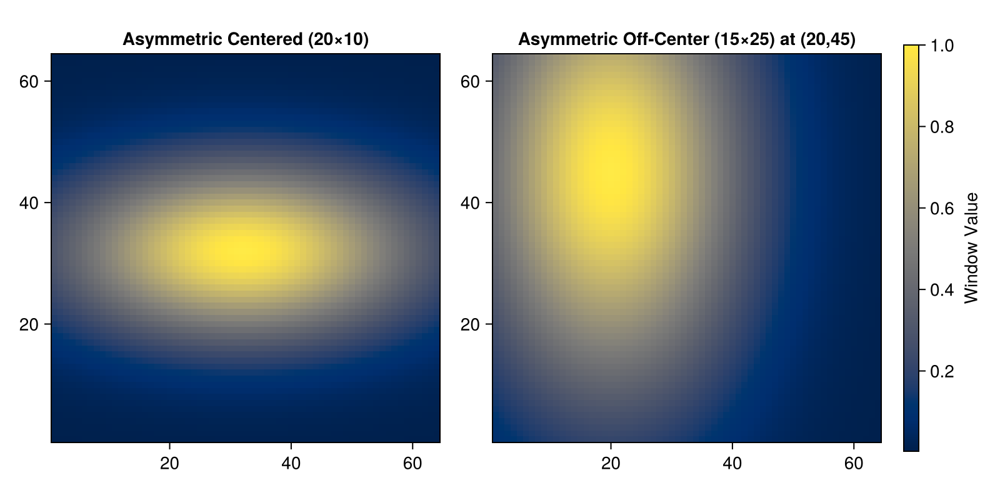
Cross-Sections and Profiles
Let's examine the profile characteristics of different windows:
Generate windows for profile analysis
gw_profile = GaussianWindow(15)
gw_offset_profile = GaussianWindow(15; center=(32, 20))
window_profile = gw_profile(dims_2d)
window_offset_profile = gw_offset_profile(dims_2d)64×64 Matrix{Float64}:
0.0529833 0.0575239 0.0621765 … 0.0023448 0.00194121 0.00159996
0.0606751 0.0658748 0.0712029 0.0026852 0.00222302 0.00183223
0.0691753 0.0751034 0.081178 0.00306138 0.00253445 0.00208891
0.0785167 0.0852453 0.0921402 0.00347479 0.0028767 0.002371
0.0887242 0.0963276 0.104119 0.00392653 0.00325069 0.00267924
0.0998142 0.108368 0.117133 … 0.00441732 0.003657 0.00301413
0.111792 0.121373 0.13119 0.00494742 0.00409586 0.00337584
0.124653 0.135335 0.146282 0.00551656 0.00456705 0.00376419
0.138376 0.150235 0.162386 0.0061239 0.00506985 0.00417861
0.15293 0.166035 0.179465 0.00676796 0.00560305 0.00461807
⋮ ⋱
0.124653 0.135335 0.146282 … 0.00551656 0.00456705 0.00376419
0.111792 0.121373 0.13119 0.00494742 0.00409586 0.00337584
0.0998142 0.108368 0.117133 0.00441732 0.003657 0.00301413
0.0887242 0.0963276 0.104119 0.00392653 0.00325069 0.00267924
0.0785167 0.0852453 0.0921402 0.00347479 0.0028767 0.002371
0.0691753 0.0751034 0.081178 … 0.00306138 0.00253445 0.00208891
0.0606751 0.0658748 0.0712029 0.0026852 0.00222302 0.00183223
0.0529833 0.0575239 0.0621765 0.0023448 0.00194121 0.00159996
0.0460615 0.0500088 0.0540537 0.00203847 0.00168761 0.00139094Extract cross-sections
center_row = window_profile[32, :]
center_col = window_profile[:, 32]
offset_row = window_offset_profile[32, :]
offset_col = window_offset_profile[:, 20]
fig = Figure(; size=(1000, 400))
ax1 = Axis(
fig[1, 1]; title="Horizontal Profiles", xlabel="Pixel Index", ylabel="Window Value"
)
lines!(ax1, 1:64, center_row; label="Centered", linewidth=2)
lines!(ax1, 1:64, offset_row; label="Off-center", linewidth=2)
axislegend(ax1)
ax2 = Axis(
fig[1, 2]; title="Vertical Profiles", xlabel="Pixel Index", ylabel="Window Value"
)
lines!(ax2, 1:64, center_col; label="Centered", linewidth=2)
lines!(ax2, 1:64, offset_col; label="Off-center", linewidth=2)
axislegend(ax2)
fig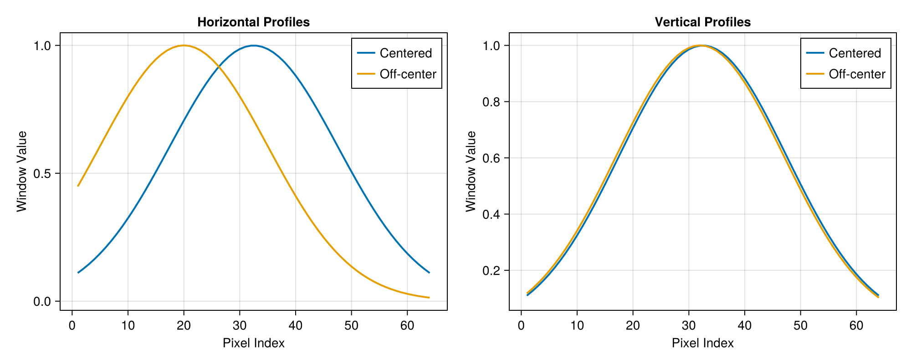
Hann Window
The HannWindow (also called "Hanning") is a raised-cosine taper with no free parameters. It reaches exactly 0 at both endpoints and 1 at the centre, making it a good default choice when you want guaranteed edge suppression without needing to tune a width parameter.
hw = HannWindow()
window_hann_1d = hw((65,))
fig = Figure(; size=(800, 350))
ax = Axis(
fig[1, 1];
title="1D Hann Window",
xlabel="Pixel Index",
ylabel="Window Value",
)
lines!(ax, -32:32, window_hann_1d; linewidth=2, color=Makie.wong_colors()[1])
hlines!(ax, [0.0, 1.0]; color=:gray, linestyle=:dot, linewidth=1)
ax.yticks = ([0.0, 0.5, 1.0], ["0", "0.5", "1"])
fig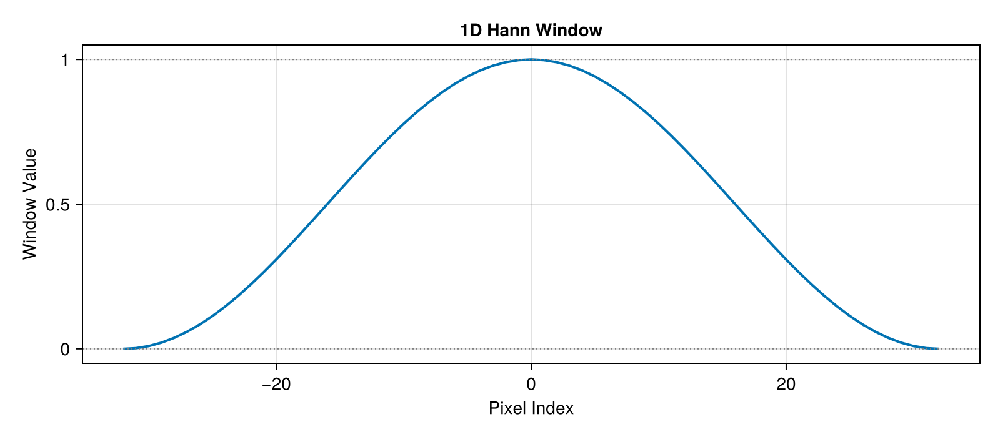
The 2D Hann window is the separable outer product of two 1D windows:
window_hann_2d = hw((64, 64))
fig = Figure(; size=(500, 420))
ax = Axis(fig[1, 1]; title="2D Hann Window", aspect=DataAspect())
hm = heatmap!(ax, window_hann_2d; colormap=:viridis)
Colorbar(fig[1, 2], hm; label="Window Value")
fig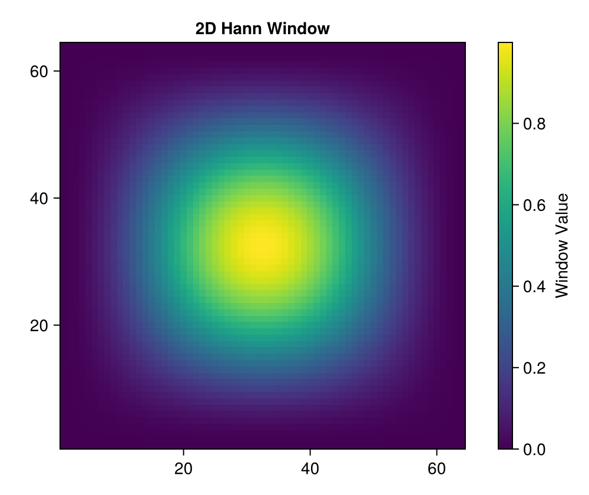
Tukey Window
The TukeyWindow (tapered cosine) has a single parameter alpha that controls what fraction of the window is used for the cosine ramps:
alpha = 0: rectangular — no tapering at allalpha = 1: identical to a Hann window0 < alpha < 1: flat top over the central1 - alphafraction, cosine ramps at each end
This makes it easy to trade off between a wide flat region and strong edge suppression.
alphas = [0.0, 0.25, 0.5, 0.75, 1.0]
N_tukey = 65
fig = Figure(; size=(800, 350))
ax = Axis(
fig[1, 1];
title="1D Tukey Windows for Different α",
xlabel="Pixel Index",
ylabel="Window Value",
)
for α in alphas
lines!(ax, -32:32, TukeyWindow(α)((N_tukey,)); label="α = $α", linewidth=2)
end
hlines!(ax, [0.0, 1.0]; color=:gray, linestyle=:dot, linewidth=1)
axislegend(ax; position=:cb)
fig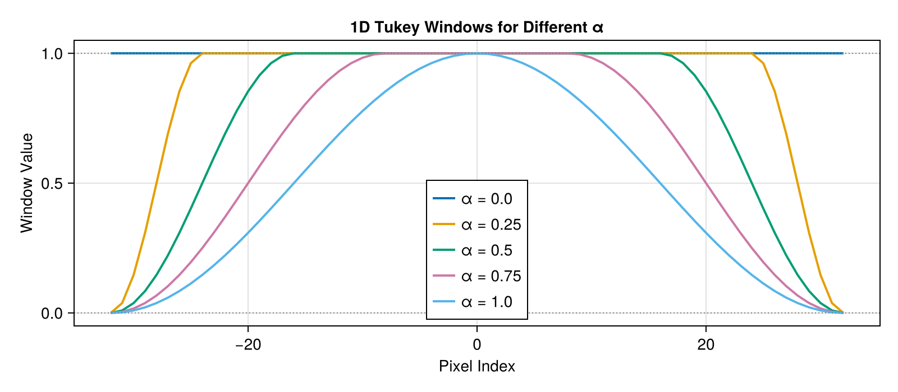
The 2D Tukey window for α = 0.5 shows a clear flat-top region in the centre:
window_tukey_2d = TukeyWindow(0.5)((64, 64))
fig = Figure(; size=(500, 420))
ax = Axis(fig[1, 1]; title="2D Tukey Window (α = 0.5)", aspect=DataAspect())
hm = heatmap!(ax, window_tukey_2d; colormap=:viridis)
Colorbar(fig[1, 2], hm; label="Window Value")
fig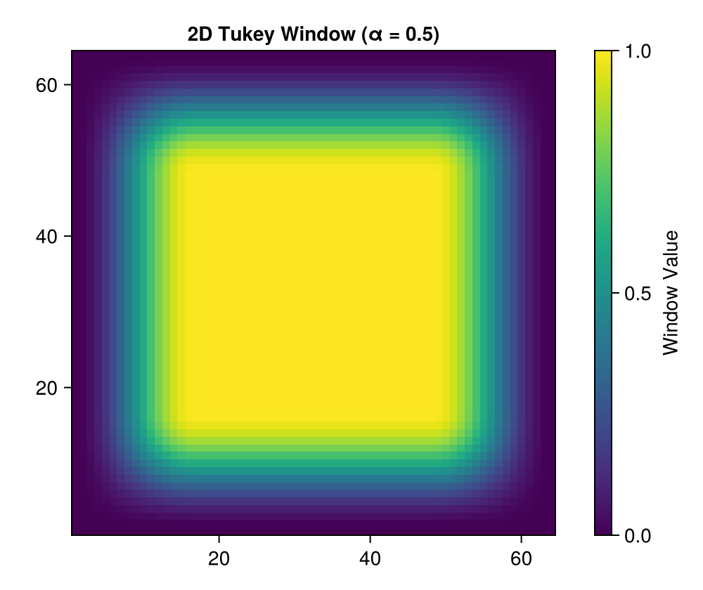
When the two image dimensions require different taper fractions, pass a tuple for alpha:
window_tukey_asym = TukeyWindow((0.5, 0.1))((64, 64))
fig = Figure(; size=(500, 420))
ax = Axis(fig[1, 1]; title="2D Tukey Window (α = (0.5, 0.1))", aspect=DataAspect())
hm = heatmap!(ax, window_tukey_asym; colormap=:viridis)
Colorbar(fig[1, 2], hm; label="Window Value")
fig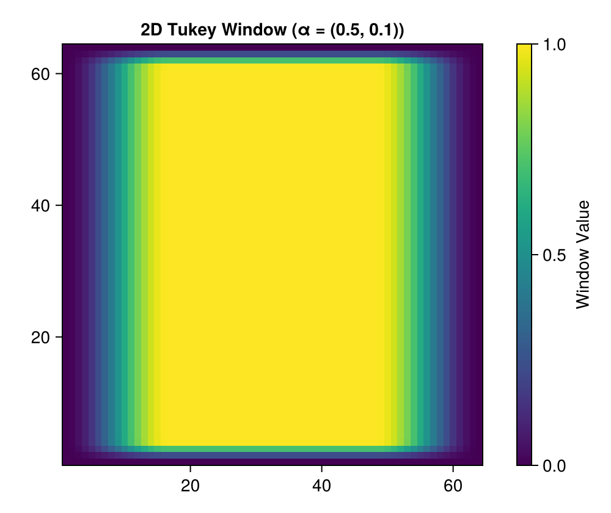
Window Comparison
Putting all three window types side by side shows the key tradeoffs:
GaussianWindownever reaches 0 — useful when a smooth, infinitely-supported envelope is wantedHannWindowguarantees zero edges with no parameters to tuneTukeyWindow(alpha)lets you preserve a flat signal region while still suppressing edges
N_cmp = 65
pixels = -32:32
fig = Figure(; size=(900, 380))
ax = Axis(
fig[1, 1];
title="Window Comparison (N = $N_cmp)",
xlabel="Pixel Index",
ylabel="Window Value",
)
lines!(ax, pixels, GaussianWindow(16)((N_cmp,)); label="Gaussian (width=16)", linewidth=2)
lines!(ax, pixels, HannWindow()((N_cmp,)); label="Hann", linewidth=2)
lines!(ax, pixels, TukeyWindow(0.5)((N_cmp,)); label="Tukey (α=0.5)", linewidth=2)
lines!(ax, pixels, TukeyWindow(0.25)((N_cmp,)); label="Tukey (α=0.25)", linewidth=2)
hlines!(ax, [0.0, 1.0]; color=:gray, linestyle=:dot, linewidth=1)
axislegend(ax; position=:cb)
fig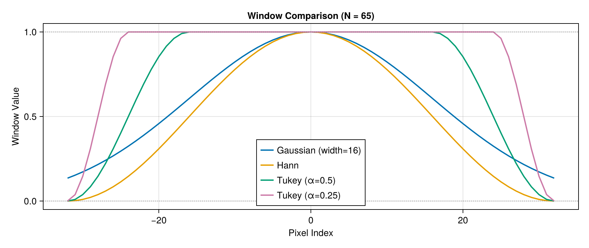
Practical Application: Windowed Fourier Analysis
Applying a window before FFT reduces spectral leakage caused by the implicit periodic extension of a finite signal. This example illustrates the resolution–leakage tradeoff: a narrow window suppresses background trends but broadens spectral peaks; a wide window preserves peak sharpness but retains more background leakage.
using FFTW
# Increase resolution for better spectral analysis
N = 256
x = 1:N1:256Add a slowly varying linear background to illustrate edge effects
f1 = 7.3
f2 = 3.7
background = 1 / N .* (x .- N / 2)
test_signal =
sin.(2π * f1 * x / N) .+ 0.5 * sin.(2π * f2 * x / N) .+ 5background .+ 0.1 * randn(N)256-element Vector{Float64}:
-2.299817590968429
-2.0387932360886203
-1.8470993186852849
-1.6140911864431653
-1.4338974557188129
-1.3133717692580114
-1.132370634577485
-1.0054666166069997
-0.9249263955085972
-0.9283197074795199
⋮
2.572745014454633
2.8388225434369314
2.845142452766589
2.8449189204706986
3.009851125349838
3.0251004504441688
3.1421714043971303
2.802175953494253
2.729342439831053Create matching windows
window_narrow = GaussianWindow(N / 5)((N,))
window_medium = GaussianWindow(N / 2)((N,))
window_wide = GaussianWindow(N)((N,))256-element Vector{Float64}:
0.8833574520381205
0.8850709403158978
0.8867742211201229
0.8884672227773293
0.8901498739476544
0.8918221036298363
0.893483841166191
0.8951350162475755
0.8967755589183324
0.8984053995812165
⋮
0.8967755589183324
0.8951350162475755
0.893483841166191
0.8918221036298363
0.8901498739476544
0.8884672227773293
0.8867742211201229
0.8850709403158978
0.8833574520381205Apply different windows
windowed_narrow = test_signal .* window_narrow
windowed_medium = test_signal .* window_medium
windowed_wide = test_signal .* window_wide256-element Vector{Float64}:
-2.03156100731032
-1.8044766465746473
-1.6379600596586532
-1.4340671137285235
-1.2763836394619636
-1.1712939741077195
-1.0117548642060885
-0.9000283761929014
-0.8294513852905409
-0.834007437737256
⋮
2.3071748482919063
2.541129463543401
2.54208880736289
2.5371615763105013
2.6792185998313642
2.6877025958285783
2.786396599760188
2.480124506089756
2.410984983388666Compute FFT spectra, normalised by window energy so peak amplitudes are comparable
fft_original = abs.(fft(test_signal))
fft_narrow = abs.(fft(windowed_narrow))
fft_medium = abs.(fft(windowed_medium))
fft_wide = abs.(fft(windowed_wide))
# Normalise by sqrt(window_energy * N) so a pure sinusoid gives amplitude 0.5 regardless of window
fft_original ./= sqrt(N * N) # rectangular implicit window
fft_narrow ./= sqrt(sum(abs2.(window_narrow)) * N)
fft_medium ./= sqrt(sum(abs2.(window_medium)) * N)
fft_wide ./= sqrt(sum(abs2.(window_wide)) * N)
freq = fftfreq(N, 1.0)
f1_freq = f1 / N
f2_freq = f2 / N
# Nearest DFT bin frequencies — spectral peaks land here, not at the true (non-integer) frequencies
f1_bin = round(Int, f1) / N
f2_bin = round(Int, f2) / N
fig = Figure(; size=(1000, 850))
# Time domain
ax1 = Axis(fig[1, 1]; title="Windowed Signals", xlabel="Sample", ylabel="Amplitude")
lines!(ax1, x, test_signal; label="Original", linewidth=2)
lines!(ax1, x, windowed_narrow; label="Narrow window", linewidth=2)
lines!(ax1, x, windowed_medium; label="Medium window", linewidth=2)
lines!(ax1, x, windowed_wide; label="Wide window", linewidth=2)
axislegend(ax1; position=:rt)
# Full frequency domain
ax2 = Axis(fig[2, 1]; title="FFT Spectra", xlabel="Frequency (in 1/N)", ylabel="Magnitude")
lines!(ax2, freq[1:div(N, 2)], fft_original[1:div(N, 2)]; label="Original", linewidth=2)
lines!(ax2, freq[1:div(N, 2)], fft_narrow[1:div(N, 2)]; label="Narrow window", linewidth=2)
lines!(ax2, freq[1:div(N, 2)], fft_medium[1:div(N, 2)]; label="Medium window", linewidth=2)
lines!(ax2, freq[1:div(N, 2)], fft_wide[1:div(N, 2)]; label="Wide window", linewidth=2)
vlines!(ax2, [f2_freq, f1_freq]; linewidth=2, alpha=0.7)
ax2.xticks = ([f2_freq, f1_freq], ["$(f2)", "$(f1)"])
axislegend(ax2; position=:rt)
# Zoom into the peak region
zoom_hw = 2 * f1_freq
ax3 = Axis(
fig[3, 1];
title="FFT Spectra — zoom near peaks",
xlabel="Frequency (in 1/N)",
ylabel="Magnitude",
limits=(0, f1_freq + zoom_hw, nothing, nothing),
)
lines!(ax3, freq[1:div(N, 2)], fft_original[1:div(N, 2)]; label="Original", linewidth=2)
lines!(ax3, freq[1:div(N, 2)], fft_narrow[1:div(N, 2)]; label="Narrow window", linewidth=2)
lines!(ax3, freq[1:div(N, 2)], fft_medium[1:div(N, 2)]; label="Medium window", linewidth=2)
lines!(ax3, freq[1:div(N, 2)], fft_wide[1:div(N, 2)]; label="Wide window", linewidth=2)
vlines!(ax3, [f2_freq, f1_freq]; linewidth=2, alpha=0.7)
vlines!(ax3, [f2_bin, f1_bin]; linewidth=1, linestyle=:dash, color=(:gray, 0.5))
ax3.xticks = (
[f2_bin, f2_freq, f1_bin, f1_freq],
["\nk=$(round(Int,f2))/N", "$(f2)", "\nk=$(round(Int,f1))/N", "$(f1)"],
)
axislegend(ax3; position=:rt)
fig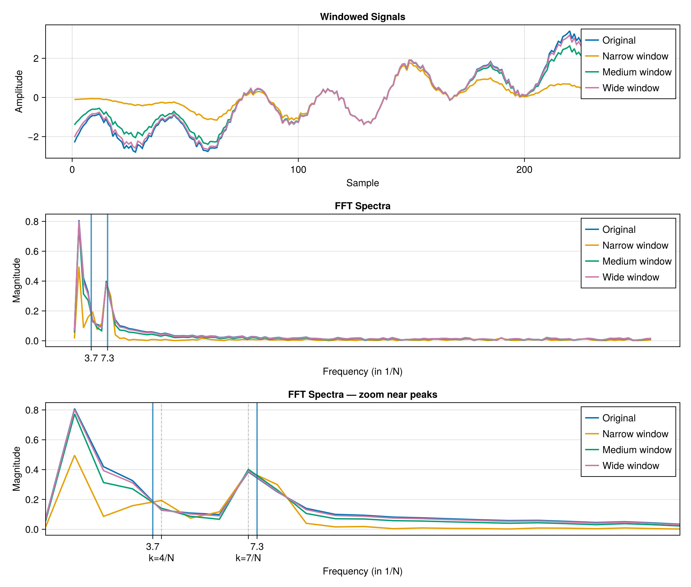
Summary
PhaseUtils provides three complementary window types, all following the same functor interface: construct a window object, then call it with a size tuple to get an array.
| Type | Parameters | Reaches 0 at edges? | Flat top? |
|---|---|---|---|
GaussianWindow(width) | width (+ optional center) | No | No |
HannWindow() | none | Yes | No |
TukeyWindow(alpha) | alpha ∈ [0,1] (scalar or tuple) | Yes (for α > 0) | Yes |
All windows are N-dimensional and separable: the N-D window is the outer product of 1D windows applied along each dimension. Asymmetric behaviour is available via tuple parameters.
Typical use cases:
- Fourier analysis: apply before FFT to suppress spectral leakage
- Image tapering: suppress edge artefacts before iterative algorithms
- Apodisation: smooth the pupil boundary in phase retrieval
This page was generated using Literate.jl.